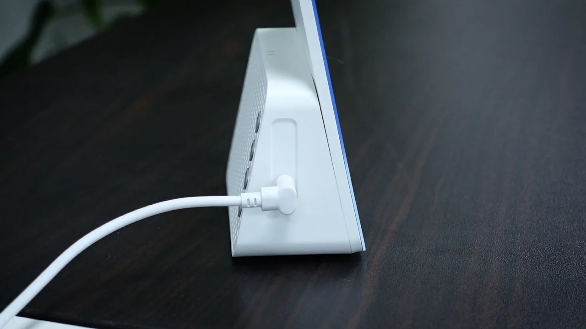
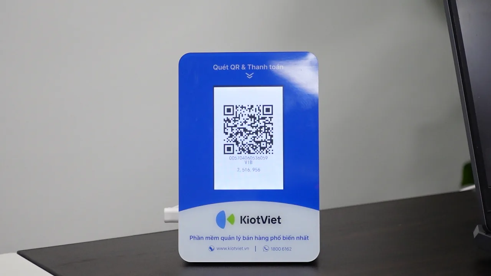
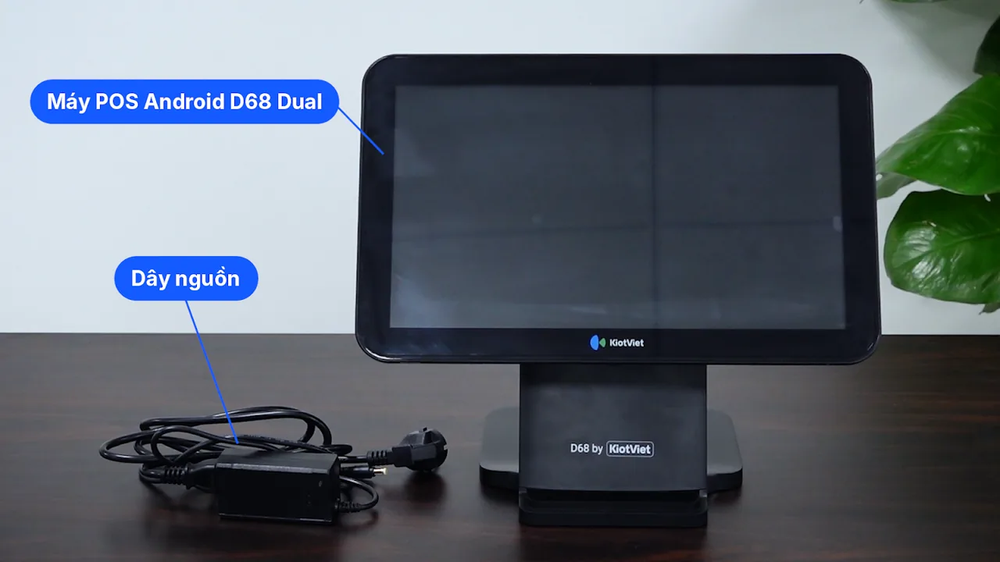

Tư vấn POS Android, thanh toán QR và xử lý phản bác phần cứng
Vấn đề
Chủ shop hay chê POS Android giá cao, bảo dán giấy QR là đủ rồi, hoặc sợ mua thiết bị về khó dùng và tốn công cài đặt.
Giải pháp
Tập trung vào lợi ích bán hàng của POS D68 Dual, Màn QR KV99 và Loa KV66, kết hợp 4 mẫu câu xử lý phản bác ngắn gọn.
Học xong bạn làm được
- Nêu bật điểm bán hàng của POS Android, KV99 và Loa KV66
- Phân biệt khi nào shop cần Màn QR và khi nào nên dùng Loa QR
- Xử lý mượt 4 phản bác giá, độ gọn quầy và nỗi sợ công nghệ
Lộ trình 5 chặng · khoảng 15 phút
Giá trị bán hàng của POS Android, Màn QR và Loa KV66
Sales chỉ cần nhớ đúng bài toán mỗi thiết bị giải quyết cho chủ shop, không cần hướng dẫn đấu dây kỹ thuật chi tiết.
Quầy hai màn hình gọn đẹp, minh bạch từng món với khách
Màn chính 15.6 inch cho thu ngân thao tác cảm ứng mượt; {{Màn hình phụ}} 10.1 inch quay ra phía khách hiển thị danh sách món, tổng tiền và mã QR thanh toán.
Hiện {{QR động}} tự động khóa đúng số tiền từng hóa đơn
Khách không cần tự gõ số tiền hay nhập số tài khoản; chỉ quét trong vài giây là nhận ngay thông báo tick xanh trên màn hình khi tiền về tài khoản Sổ quỹ.
Vừa hiện QR động vừa đọc âm thanh báo tiền về tức thì
Thu ngân hoặc chủ tiệm bận đóng gói, lấy hàng trên kệ vẫn nghe rõ tiền đã vào tài khoản mà không phải kiểm tra màn hình điện thoại của khách.





4 lời từ chối phổ biến và hướng trả lời cho Sales
Bấm từng câu phản bác của chủ shop bên trái để xem cách đồng cảm, chỉ rõ điểm lợi và chốt gợi ý hợp lý.
4 khái niệm cần nhớ khi tư vấn POS và QR
Lật hết 4 thẻ và trả lời câu kiểm tra nhanh bên dưới.
0 / 4 thẻ đã lật
Ý nghĩa
Mã QR tạo mới riêng cho từng hóa đơn, nạp sẵn số tài khoản nhận và số tiền chính xác cần thu.
Ví dụ
Đơn 247.000đ hiện đúng số 247.000đ trên KV99, khách chỉ quét và xác nhận chuyển.
Ý nghĩa
Tấm mica hay tờ giấy cố định, khách tự nhập tay số tiền và thu ngân khó kiểm soát lúc đông khách.
Ví dụ
Đơn 550.000đ nhưng khách gõ nhầm 55.000đ hoặc đưa ảnh chụp màn hình giao dịch cũ.
Ý nghĩa
Màn hình 10.1 inch hướng về phía người mua để xem tên món, số lượng, thành tiền và mã QR.
Ví dụ
Khách thấy ngay giá từng món thu ngân vừa quét, giảm thắc mắc sai tiền thừa.
Ý nghĩa
Khi tắt giao diện tối ưu riêng cho khách, màn phụ của POS sẽ chiếu giống hệt màn hình chính.
Ví dụ
Cửa hàng muốn bật giao diện khách gọn gàng chỉ cần giữ tùy chọn mặc định trên app POS.
Tiệm tạp hóa đông khách buổi tối, một mình chủ tiệm vừa chạy ra kệ nhặt đồ vừa thu tiền chuyển khoản thì thiết bị QR nào phù hợp nhất?
Trả lời đúng tâm lý chủ shop bán lẻ
Chọn câu tư vấn giúp khách thấy rõ lợi ích đầu tư mà không ép mua sai nhu cầu. Chọn chưa đúng bạn được chọn lại.
4 câu hỏi hay gặp về POS Android và thanh toán QR
Câu hỏi 1"KV99 và Loa KV66 lấy tài khoản ngân hàng từ đâu để tạo mã?"
Ý chính
Lấy từ tài khoản ngân hàng đã khai báo ở Sổ quỹ.
Trả lời
- Vào Sổ quỹ › Ngân hàng khai báo tài khoản shop.
- Hỗ trợ liên kết các ngân hàng phổ biến chuẩn VietQR.
Câu hỏi 2"Máy POS Android nên cắm Wi-Fi hay dây mạng cho ổn định?"
Ý chính
Ưu tiên cắm dây mạng LAN cổng RJ45 trên POS.
Lý do
- Giữ đường truyền mượt, tránh rớt Wi-Fi cao điểm.
- Thanh toán QR động và đồng bộ đơn liên tục.
Câu hỏi 3"Tắt giao diện khách trên POS D68 Dual thì màn phụ hiện gì?"
Ý chính
Màn phụ phản chiếu y hệt màn hình chính.
Lưu ý
- Nên bật giao diện khách để chỉ hiện giỏ và QR.
- Giữ riêng tư cho thao tác quản lý của thu ngân.
Câu hỏi 4"Loa KV66 rút dây USB hay quầy hẹp có dùng linh hoạt được không?"
Ý chính
Loa dùng Wi-Fi và có pin sạc cổng Type-C.
Chốt ý
- Sạc đầy có thể rút dây đặt chỗ khách dễ quét.
- Loa phát âm báo tiền về là xác nhận xong đơn.
Hoàn thành Bài 3.3 & Kết thúc Buổi 3
- POS Android D68 Dual gọn quầy, hai màn hình minh bạch giá và QR.
- KV99 / Loa KV66 dùng {{QR động}} khóa đúng số tiền từng đơn, báo tức thì.
- Xử lý phản bác luôn xoay về tránh thất thoát, tăng tốc và đội ngũ hỗ trợ.